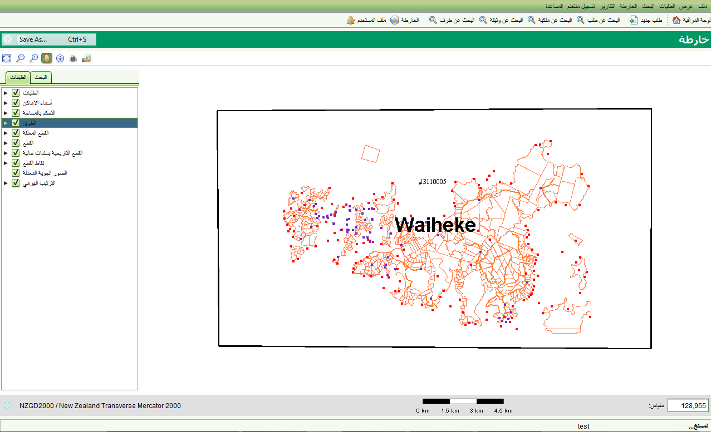
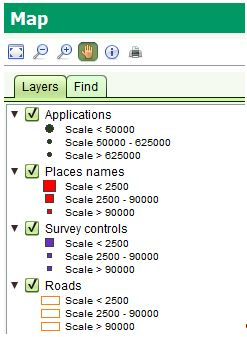
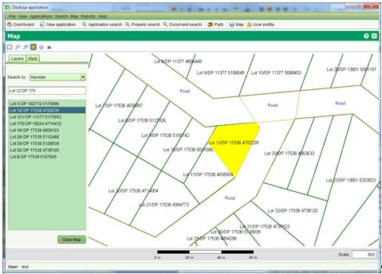

يسمح متصفح خرائط سولا للتنقل والتفاعل بين البيانات الجيو-مكانية. يمكن الوصول للمتصفح صفة الخرائط واستخدام مفتاح كنترول+ فتح او باختيار >

Tيحتوي متصفح الخرائط على شريط ادوات للتنقل والاستفسار وصفحتين : الصفحة الاولى تستخدم للتحكم في الطبقات المعروضة على الخارطة والثانية للبحث والتي تستخدم للبحث عن قطعة على الخارطة . الادوات الموجودة في شريط الادوات هي :
يدعم متصفح خرائط سولا أدوات اخرى لتعديل البيانات ومهمات مكانية ذات علاقة مثل تحديد مكان الكلب. هذه الأدوات تم وصفها في الأقسام ذات العلاقة من هذا الدليل
يمكن التحكم بمقياس الخارطة عن طريق ادوات التكبير, التصغير , والتكبير لمدى . المقياس المطلوب يمكن ادخاله مباشرة في حقل المقياس في الجهة اليمنى من الخارطة. يتم عرض بار (شريط) للمساعدة في عرض المسافات على الخارطة. ونظرا لاختلاف دقة الخارطة , بار المسافات لا يعكس مسافات دقيقة . وخلال تمرير الفأرة فوق الخارطة باستطاعتك رؤية الاحداثيات معروضة في الجهة السفلى تحت صفحة الطبقات وصفحة البحث .
Tصفحة الطبقات تعرض البيانات الجيومكانية على الخارطة . تستطيع اظهار او اخفاء الطبقات باختيار او عدم اختيار حقل اسم الطبقة

من خلال النقر على المثلث بجانب اسم الطبقة تستطيع رؤية الرمز المستخدم لتوضيح البيانات الجيو-مكانية على المقاييس المختلقة . على سبيل المثال اذا كان مقياي الخارطة اقل من 2500, سوف يتم عرض اسماء الاماكن باستخدام مربعات حمراء كبيرة. ما بين 2500 و 90000 يتم استخدام مربعات حمراء متوسطة و فوق 90000 يتم استخدام مربعات صغيرة. استخدام مقياس الخارطة لعرض الرموز يساهم في التقليل من كثافة المعلومات المعروضة الخارطة مما يسهل قراءة وتتبع هذه المعلومات.
الطبقات الابتدائية الموجودة في سولا هي:
تستطيع استخدام صفحة البحث للبحث السريع عن القطع او اية معالم لها بيانات جغرافية مكانية. لاستخدام البحث , اختر نوع المعلم المكاني من قائمة الخيارات وذلك بالطباعة داخل الحقل . بعد ادخال عدد كاف من الاحرف (من 1 الى 3 ) , سيبدأ البحث بعرض النتائج التي توافق القيم المدخلة . لعرض التفاصيل , انقر نقرة مزدوجة على قيمة النتائج وسوف تقوم الخارطة بتكبير الموقع للدلالة على المكان الذي تم اختياره

تستخدم اداة المعلومات للاستفسار عن المعالم الجيومكانية مثل القطع, علامات المسح , اسماء الاماكن, الطرق, القرى الخ. المعالم الجيومكانية عادة تكون قريبة من بعضها او تتداخل, لذا تسمح اداة المعلومات بعرض المعلومات عن جميع المعالم التي تحيط بالمكان الذي تم اختياره. اختر الصفحة المناسبة لمعرفة المزيد من المعلومات عن المعالم المختلفة. لاحظ بان امكانيات عرض المعلومات يمكن اعادة تعريفها لتلائم احتياجات دائرة الاراضي
اداة الطباعة يمكن استخدامها لطباعة الخارطة المرئية بصيغة ملف pdf. تستطيع تفعيل\عدم تفعيل الطبقات اذا كنت ترغب او لا ترغب بطباعتها. ثم تستطيع اختيار حجم الصفحة (A3, A4, A5 ) . تستطيع من نفس الشاشة اختيار المقياس. سوف يكون هناك مقياس مقترح تم حسابه من الخارطة. اضغط على زر الطباعة لتشكيل وثيقة تحتوي الخارطة. باستخدام متصفح التقارير,و تستطيع تخزين الوثيقة المطبوعة بعدة صيغ (PDF, DOCX and HTML) او طباعة نسخة ورقية لصيغة PDF ويشترط ذلك وجود متصفح PDF على الجهاز
لاحظ انه حيثما توجد خارطة في النظام يوجد زر للطباعة . كذلك عند الطباعة سوف يتم تسجيل خدمة " طباعة مساحة " في جدول الخدمات بحالة مكتملة . اذا تم تفعيل هذه الخدمة من الطلب سوف يتم ارفاق الخدمة بالطلب باسم خدمة طباعة خارطة . لاحظ ايضا بان نماذج طباعة حجم الصفحة (A3, A4 and A5) يمكن تعديلها حسب احتياجات دائرة الاراضي
تستخدم اداة التصدير الى صيغة KML لتصدير ملف الخارطة المرئية الى الصيغة الاساسية لملف KML حيث يمكن بعد ذلك اعادة تحميلها باستخدام برنامج Google Earth. سوف يتم تنسيق الكائنات المختلفة حسب رغبة المستخدم قبل اجراء عملية التصدير. عليك استخدام اداة البحث عن خارطة ثم اختيار المعالم قبل عملية التصدير . سوف يتم تصدير الطبقة التي تم اختيارها كخطوط طول وعرض في ملف mapExport.kml تحت المجلد your < user_home glt;/sola/ directory
بالنقر المزدوج على الملف سوف يتم عرضه في برنامج Google Earth
تستخدم اداة التصدير الى صيغة KML لتصدير ملف الخارطة المرئية الى الصيغة الاساسية لملف KML حيث يمكن بعد ذلك اعادة تحميلها باستخدام برنامج Google Earth. سوف يتم تنسيق الكائنات المختلفة حسب رغبة المستخدم قبل اجراء عملية التصدير. عليك استخدام اداة البحث عن خارطة ثم اختيار المعالم قبل عملية التصدير . سوف يتم تصدير الطبقة التي تم اختيارها كخطوط طول وعرض في ملف mapExport.kml تحت المجلد your < user_home glt;/sola/ directory بالنقر المزدوج على الملف سوف يتم عرضه في برنامج Google Earth
انظر ايضا